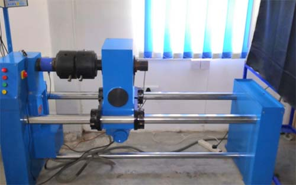

1. Tensometer
A device for evaluating various tensile properties of a material, such Young's modulus,ultimate tensile strengt and Poisson's ratio.
2.Rockwell Hardness Tester
Rockwell hardness tester is used to determine the surface hardness of the materials.Provisions to apply a major load of 60kgf,100kgf,and 150kgf are available in this machine.Itdirectly calculates the rockwell hardness value upon completion of the test.3. Impact Tester
This is used to study the toughness or energy absorbing properties of various materials under two types of impact tests i.e Izod and charpy impact tests.4.Simply Supported Beam setup

5.Cantilever setup
It is a type of cantilever beam setup.
6. Compression Tester for Spring

7. Surface Roughness Tester

8.Static UTM
This machine is used to perform tensile,compression,shear and bend test.Capacity of model is 50KN9. Torsion Tester

This tester is used to obtain twisting moment-twist relationship of a specimen and to determine shear modulus G,yield stress in pure shear,experimental ultimate torque.10. Euler Buckling Apparatus
To determine the euler buckling load experimentally and compare it to the eulertheory.Also to study the effect of end conditions on the buckling load.11. Dynamic UTM

12. Diffused light Polariscope

13. Stress Analysis on Thin Cylinder
To show the linearity of strain gauges in the open end condition in a thin cylinder,to fine the hoop stress and strain relationship for the cylinder material and to fine the longitudinal and hoop strain relationship.14. Cam-Follower Apparatus

15. Universal Governor
A governor, or speed limiter or controller, is a device used to measure and regulate the speed of a machine, such as an engine.16. Gyroscope
Applications of gyroscopes include inertial navigation systems, such as in the Hubble Telescope, or inside the steel hull of a submerged submarine. Due to their precision, gyroscopes are also used in gyrotheodolites to maintain direction in tunnel mining.[4] Gyroscopes can be used to construct gyrocompasses, which complement or replace magnetic compasses (in ships, aircraft and spacecraft, vehicles in general), to assist in stability (bicycles, motorcycles, and ships) or be used as part of an inertial guidance system.
18. Journal Bearing Apparatus
A self-contained floor standing apparatus to fully investigate the effects of speed viscosity and load on the pressure distribution in a journal bearing.19. Forces at reciprocating masses setup
This model is used to determine the primary and secondary unbalanced forces of reciprocating mass20. Epicyclic Gear Train

21. Fatigue Testing Machine
Fatigue test machines use static, dynamic, and fatigue tests to evaluate the sturdiness of raw materials, components or finished products.Fatigue tests help to determine a test sample's life expectancy under actual service loads in real-world applications.22. Static & dynamic Balancing
This is suitable for conducting experiments on static balancing and dynamic balancing with different weights. This consists of rectangular frame of steel perfectly balance with four different blocks. A protractor scale of the disc is provided to reach exact angular position of each weight to be measured. A linear scale provided below the frame provides the measurement of each weight along the shaft. The unit is hanging from a rigid steel frame through chain for dynamic balancing and can be fixed rigidly for static balancing.specified .23. Pin & Disc Wear Apparatus
Pin on disk wear testing is a method of characterizing the coefficient of friction,frictional force and rate of wear between two materials.This testing can simulate multiple modes of wear,includingunideirectional,bidirectional,omni directional and quasi rotational.
24. Slip & Creep Measurement Apparatus
Slip & Creep Measurement Apparatus. This apparatus is useful for measurement of power transmitted for various input power conditions with varied belt tension. Belt slip or creepalso can be measured. The apparatus consists of a variable speed motor, driving pulley and driven pulley of equal diameters.
25.Whirling Shaft Apparatus

1) To measure co-efficient of friction between pulley material and different belt materials.
2) To measure power transmitted with varied belt tension and plotting a graph of “Tension Characteristics”.
26.Universal vibration apparatus

1) Equivalent spring mass system to study the undamped free vibration.
2) Equivalent spring mass system to study forced calibration.